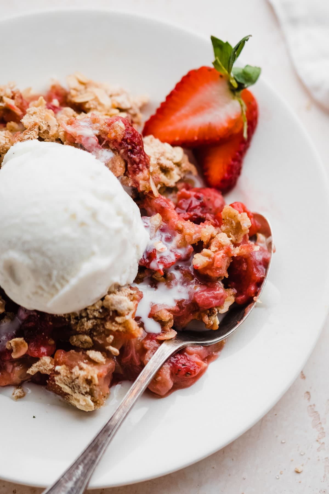

Strawberry Rhubarb Crisp Recipe

- Prep Time: 15 mins
- Cook Time: 45 mins
- Total Time: 1 hrs
- Servings: 18
This strawberry rhubarb crisp is perfect for those who wonder what to do with that big rhubarb plant in the garden. This recipe is your answer — it will have you coming back for more!
Ingredients
- Fruits
- Sugar
- Flour
- Oats
- Butter
How to make
- Make the first layer with fruit, sugar, and flour. Place in the baking dish.
- Make the topping, then sprinkle it over the fruit layer.
- Bake in the preheated oven until the topping is crisp and lightly browned.